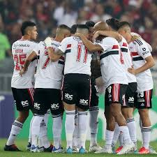

Chicken Inn FC termina sequência de Vitórias
Time Chicken Inn FC infelizmente perde sequência de vitórias

Chicken Inn FC ganha campeonato
Chicken Inn humilhou o líder do campeonato.

Ex-jogador do Chicken Inn FC é encontrado morto em casa
Ex-jogador Tendai Ndoro, morre aos 40 anos e é encontrado em casa.

Chicken Inn FC conquista o Premier Soccer League Zimbábue
Os Galinha FC conquistaram o título de Premier Soccer League Zimbábue em 2015.

Chicken Inn FC anuncia novas contratações
Chicken Inn apresenta:
Tadiwa Chibunyu, do Cranborne Bullets, e o atacante Obert Malajila.

O chefe do Chicken Inn FC recebe reconhecimento regional
O secretário-geral do Chicken Inn FC, Tavengwa Hara, foi nomeado,
com efeito imediato, para o Comitê Jurídico e
de Estatutos do Conselho das Associações de Futebol da África Austral (Cosafa),
conforme revelado pelo Zimpapers Sports Hub.
Chicken Inn FC ganha campeonato
Chicken Inn humilhou o líder do campeonato.
Chicken Inn FC ganha campeonato
Chicken Inn humilhou o líder do campeonato.